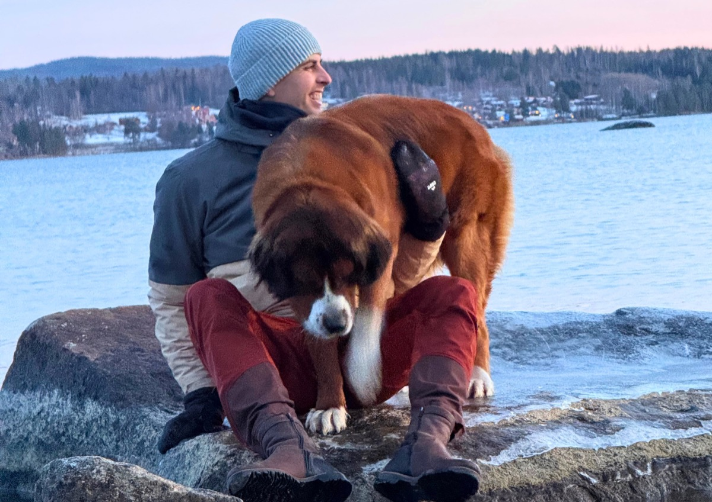
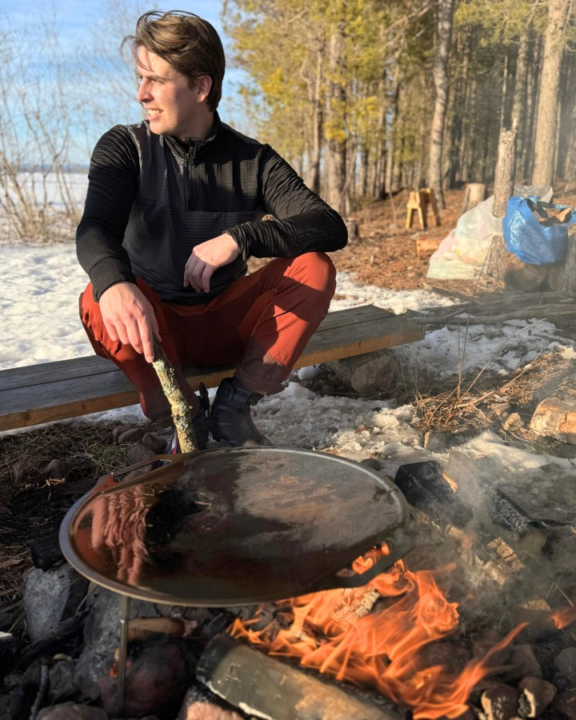
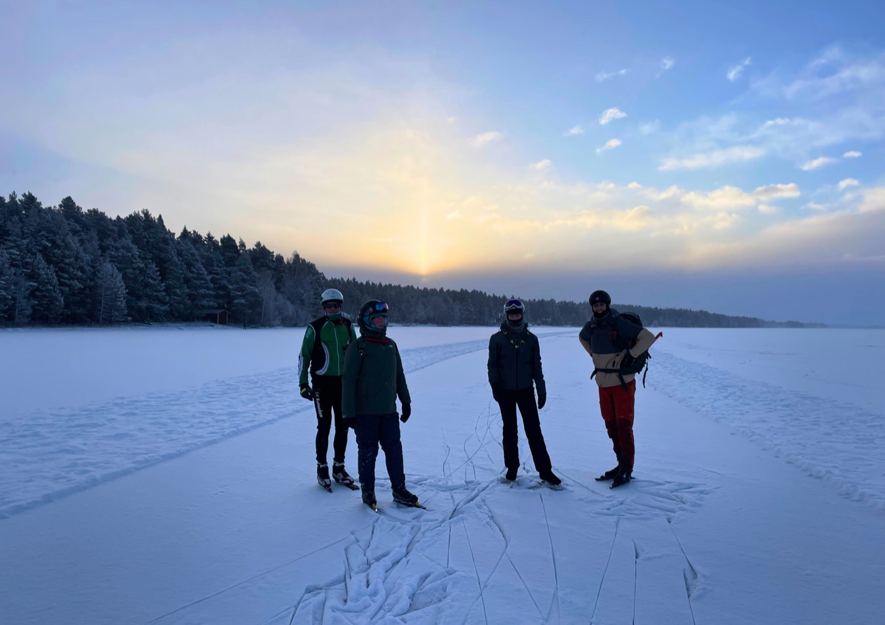

Att vara ute, i naturen, det är vad det handlar om för mig. Att åka skridskor på naturis ger en frihet utan motstycke.
Det är ingen kontrollerad isbana, utan något du måste läsa, förstå och respektera. Varje dag på naturis är annorlunda - vinden, ljuset, förhållandena. Särskilt de soliga, vindstilla dagarna är magiska. Jag vill låta människor uppleva det, för i vårt samhälle stannar vi för sällan upp för att uppmärksamma det.
Min bakgrund ligger i skridskoåkningen. Jag har åkt skridskor sedan jag var liten och har med åren byggt upp stor erfarenhet av naturis. Senare utbildade jag mig till idrottslärare och skaffade mig därefter mycket erfarenhet i 11shop i Elfstedenhal, där jag arbetade med skridskomaterial och slipning. Men i slutändan handlar det för mig inte om prestationer - det handlar om att uppleva skridskoåkningen och naturen.